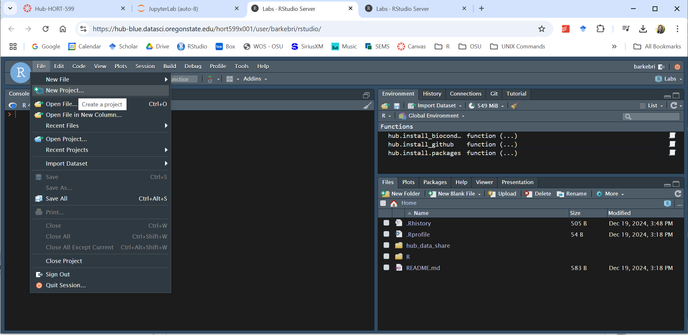
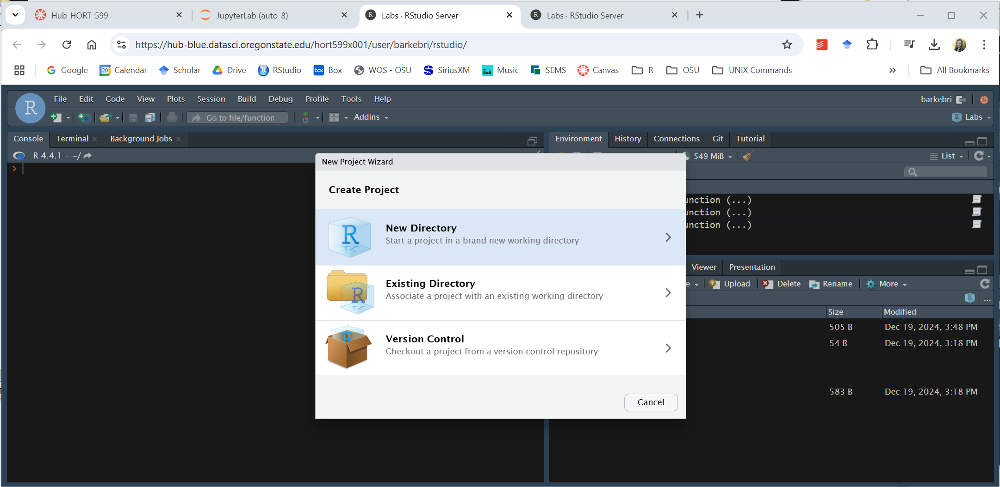
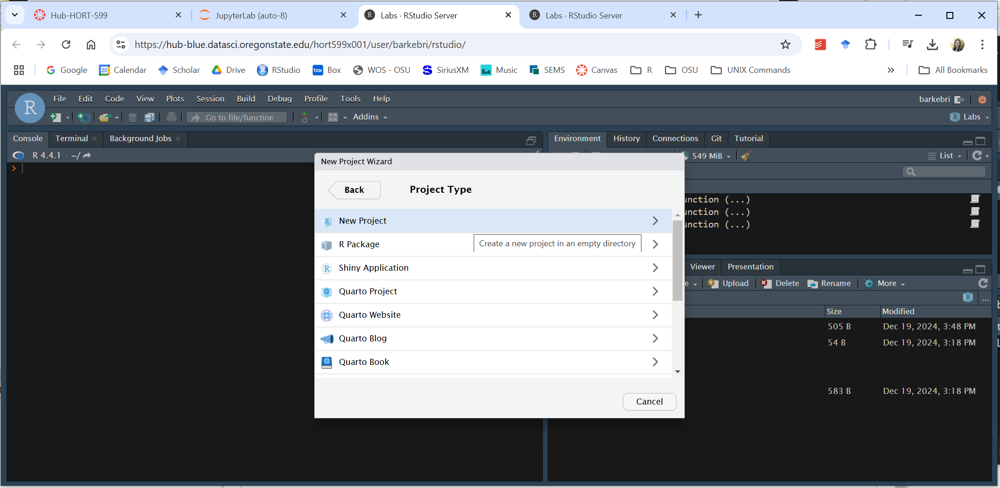
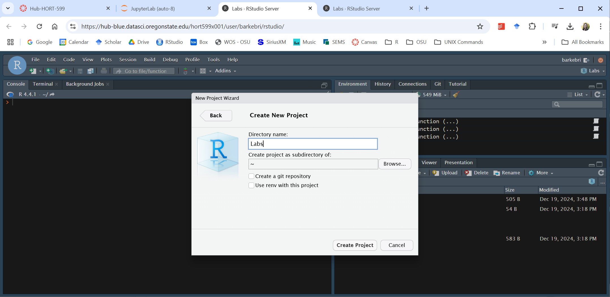
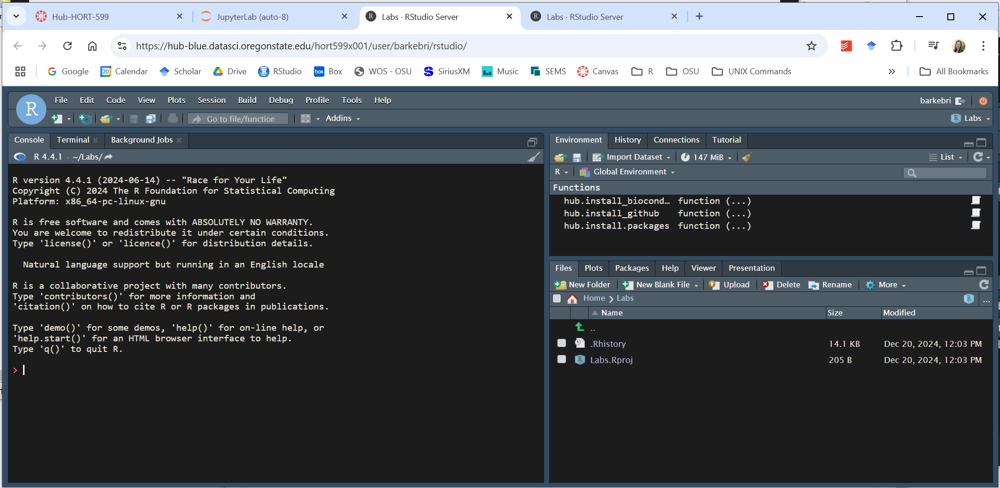
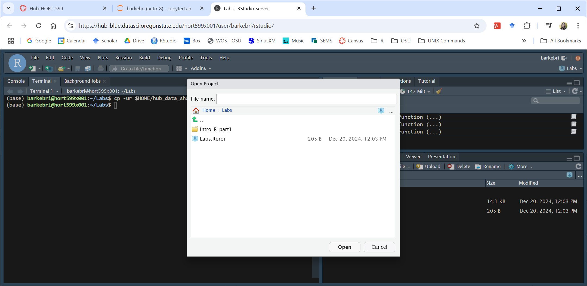

Introduction to R and RStudio
Ecological Systems Modeling
Jan 6-10, 2025
About me
Current position
- Asst. Res. Professor, Oregon IPM Center & Hort.
Research interests
- Modeling, ecology, biogeography, conservation, biological invasions, and genetics
Hobbies
- Running, hiking, biking, moving!
- Gardening, native habitat restoration
- Artistic and creative endeavors
Learning objectives
- Explain what R and RStudio are, what they are used for, and how they relate to each other
- Describe the purpose of the RStudio Script, Console, Environment, and Plots panes
- Create an R project and understand the purpose of the working directory
- Copy a folder of files on Jupyter Hub and open them in RStudio
Learning objectives
- Explain what R and RStudio are, what they are used for, and how they relate to each other
- Describe the purpose of the Script, Console, Environment, and Plots panes in RStudio
- Create an R project and understand the purpose of the working directory
- Copy a folder of files on Jupyter Hub and open them in RStudio
What is R?
- First implemented beginning in early 1990s (based on S language)
- First designed for statistics but can now do much more
Source: blog.internshala.com
Why learn R?
- Commonly used programming language
- Does more than just statistics
- Great for reproducibility
- Interdisciplinary and extensible
- Large and friendly user community
- Facilitates learning and comprehension
R is a commonly used programming language

R is more than just statistics

Source: www.icertglobal.com
R is great for reproducibility
- No need to remember a series of points and clicks
- Quickly re-create plots, re-run models and analyses, etc.
- Makes steps used in your analysis clear
- Can be inspected by someone for feedback
Source: www.cos.io
Example: R scripts in GitHub for one of my pubs
Barker, B. S., L. Coop, and C. Hong. 2022.Biology 11:849
R is interdisciplinary and extensible
- 10,000+ packages to extend its capabilities
- Use statistical approaches from many scientific disciplines
- e.g., image analysis, GIS, time series, population genetics, and much more
R packages
- Libraries of functions, code, and documentation
- Analogy: apps that you download on your phone

Source: ModernDive
Wrangle and manipulate data
Source: Allison Horst
Make beautiful plots
ggplot2 package (part of tidyverse)

Source: www.analyticsvidhya.com
Make a presentation
revealjs package (this is code for my presentation)
Make a web app

Cascadia R Conf 2025
- Conference that brings together professionals and students who use R
- Various fields represented: life sciences, medicine, stats, teaching, etc.
- Next conference will be in Portland on June 21-22, 2025
- Stay tuned at:
https://cascadiarconf.com/

Facilitate learning and comprehension
- Computer programming is a key skill set for data science
- Hands-on work with your data, analyses, etc., provides more in depth understanding
Limitations of R
- Steep learning curve, but
RStudio can help overcome this limitation
- Hungry for physical memory: stores all data in physical memory
- Slower execution: sometimes not as fast as MATLAB and Python

Even after years of experience with R, I have days where I….
RStudio
- Re-branded as Posit (more inclusive of other programming langs)
- Free and open source IDE (integrated development environment)
- Many convenient features and tools that make it easier to
- write and troubleshoot code
- interact with objects in the R environment
- simultaneously view graphs, data tables, code, and outputs

Analogy of difference between R and RStudio
Source: moderndive.com
Learning objectives
- Explain what R and RStudio are, what they are used for, and how they relate to each other
- Describe the purpose of the Script, Console, Environment, and Plots panes in RStudio
- Create an R project and understand the purpose of the working directory
- Copy a folder of files on Jupyter Hub and open them in RStudio
We will use RStudio on Jupyter Hub at OSU
- Everyone log on to
HORT599 in Canvas
We will use RStudio on Jupyter Hub at OSU
- Navigate to (
Modules -> Jupyter Hub)
- Click on
Hub-HORT-599
We will use RStudio on Jupyter Hub at OSU
- Navigate to (
Modules -> Jupyter Hub)
- Click on
Hub-HORT-599
- Click on
Load Hub-HORT-599 in a new window
Jupyter Hub
- You should see your Jupyter Hub workspace (mine is below)
- Other students cannot modify anything in your workspace

Jupyter Notebook
- The
Launcher tab contains your Jupyter Notebook for this course
- For this course, we will only be utilizing RStudio

In Jupyter Hub
- Click on the new folder icon

In Jupyter Hub
- Click on the new folder icon
- Create a directory (folder) named
Labs

In Jupyter Hub
- Click the
RStudio icon in your Notebook (in Launcher tab)

RStudio is divided into 4 “panes”
Not seeing the entire Source pane? Click the first icon in the top upper-right corner
Preferences
- The placement of the 4 panes and their content can be customized
- See menu,
Tools -> Global Options -> Pane Layout
- Background color, font color, font size, and zoom level are in (
Global Options -> Appearance)
RStudio: Source (top-left) pane
- Your scripts or other files (e.g., R Markdown files)
RStudio: Environment/History (top-right) pane
- Objects in your working space (Environment) and your command history (History)
RStudio: Files/Plots/Packages/etc. pane (bottom-right)
- Files, plots, etc. in your directories (in Jupyter Hub)
RStudio: R Console (bottom-left)
- Provides an area to interactively execute code (but won’t be saved!)
Learning objectives
- Explain what R and RStudio are, what they are used for, and how they relate to each other
- Describe the purpose of the Script, Console, Environment, and Plots panes in RStudio
- Create an R project and understand the purpose of the working directory
- Copy a folder of files on Jupyter Hub and open them in RStudio
Create an R project for this course
- Under the
File menu, click on New Project

Create an R project for this course
- Choose
Existing Directory, then New Project

Create an R project for this course
- Select the
Labs folder that you recently created

The working directory
- The
Labs folder, where you put your R project, will be your working directory
- To see this, type in
getwd() in the R console
- It should return
/home/username/Labs (username is your ONID)

Why are we doing this?
- You must open your R project prior to opening a lab assignment (more on this later)
- All code within the
Labs directory can use relative paths to files that indicate where inside the project a file is located
- The use of projects and relative paths makes sharing code with others easier
- It’s also less laborious than typing out absolute paths (i.e., the full path to your directory)
Learning objectives
- Explain what R and RStudio are, what they are used for, and how they relate to each other
- Describe the purpose of the Script, Console, Environment, and Plots panes in RStudio
- Create an R project and understand the purpose of the working directory
- Copy a folder of files on Jupyter Hub and open them in RStudio
Copying tutorials/lab assignments
- NOTE: Instructions presented here are available in Canvas
- Go to
Modules -> Jupyter Hub -> Copying_files.pdf
Copying tutorials/lab assignments
- All files that involved the use of R will be in
hub_data_share in Jupyter Hub
- You will need to copy folders with these files to your own account
Method 1: copy folder using Terminal in RStudio
Open up RStudio and click on the Terminal tab in the Console pane (bottom-left)

Method 1: copy folder using Terminal in RStudio
Type in the following command in the terminal:
cp -ur $HOME/hub_data_share/Intro_to_R_part1* $HOME/Labs/

cp copies files and directories
-u option indicates copying only new and missing files to the destination
-r option indicates drilling down through the directory structure
$HOME is the path to your home directory, which is /home/your_onid
Method 1: copy folder using Terminal in RStudio
- If it worked correctly, you should see the
Intro_R_Part1 folder
- (In the
Files tab of the Files/Plots/Packages/etc. pane)

Method 2: Using the Terminal in Jupyter Hub
In the Launcher tab, scroll down to the Other section
Click on Terminal (black box with money symbol) to start a session
Type cp -ur $HOME/hub_data_share/Intro_to_R_part1* $HOME/Labs/

Open your project and load some files
- We will be using the
Labs project (Labs.proj) for all tutorials and lab assignments
- In RStudio, if you’re project isn’t already open, click on
File -> Open Project

Open your project and load some files
- Open your project (
Labs.proj)
Open an R script
- Click on
Open File
- Navigate to
Home -> Labs -> Tutorials -> Intro_R_part1 -> scripts
- Select the
here_example.R script
The here package
- For this class, we will use the
here package to use project-relative paths
- Select all text in the script by pressing
Ctrl + A
- Click on the
Run button on the Source pane

Output in the Console pane
- Line 6 of the code was the project-relative path to
file.txt
- Line 9 read the lines of
file.txt using readLines() (see result in console)